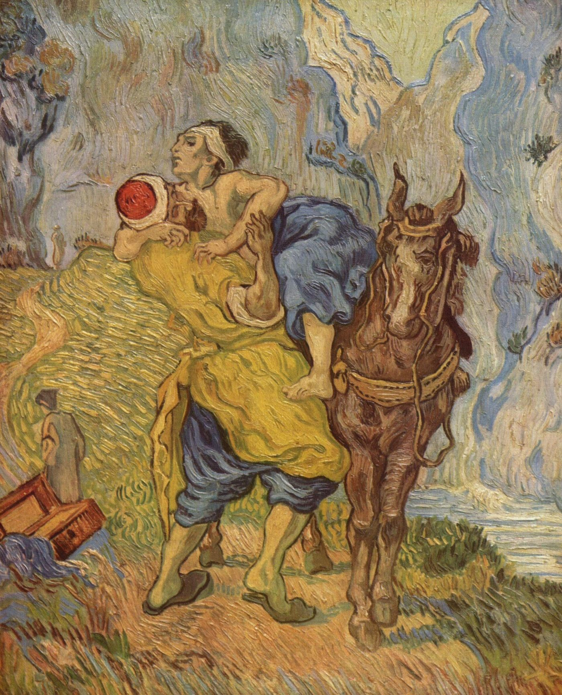

AI와
대화한다는 것
꿈이있는교회 특강
2026년 12월 6일, 최회현
- 1부
- 2부
- 3부
1부
AI가 뭔지
법은 AI를 "학습·추론·판단·언어 이해 같은 인간의 지적 능력을 구현한 것"이라 한다(인공지능기본법 제2조). 그런데 실제로는 무슨 일을 할까?
이분의 키는 몇 cm일까요?
추측
0개
평균
—cm
실제 키
?cm
AI는 평균을 찾아간다.
빈칸에 무슨 말이 올까요?
저 오늘
LLM은 낱말에 대한 대답의 평균이다.
이번엔 정답이 있습니다. 맞혀 보세요.
부장님, 저 오늘
영상은 앞 화면에서 봅니다
제 답은요
방금 영상은
AI가 만들었습니다.
어떻게 낱말 맞히는 기계가
영상까지 만들 수 있는 걸까?
사람이 동물보다
유독 뛰어난 것, 넷
넷 다 동물에게도 있다. 사람이 유독 뛰어날 뿐이다.
이 네 가지를 우리는
보통 지능이라고 부른다.
과학자들은 이 네 가지를
기계가 할 수 있게 하려고
연구해왔다.
“Why will the stories only be sung?”
“Songs will be all they have to remember those of us who can write.”“왜 이야기는 노래로만 전해질까요?” “글을 쓸 줄 알던 우리를 기억할 길이, 그들에게는 노래밖에 없을 테니까.”
영화 〈오디세이〉의 마지막 대사
글로 쓰든 노래로 남기든, 사람은 남겼다.
인간이 동물보다 뛰어난 건, 문명을 이룩하기 전부터였다.
인간이 문명을 이룩한 건, 대화를 더 기억하기 위해
기록을 남겼기 때문이다.
말을 남기는 데 나머지 셋이 쓰였다.
AI가 평균적으로 맞추고 있는 것이 바로 그 기록을 통해 배운 대화다.
그런데 사람이 남긴 기록은 글만이 아니다. 그림에도, 노래에도, 영상에도 말이 붙어 있다. 제목, 설명, 가사, 자막.
그래서 기계는 말과 함께 그림을 배우고, 말과 함께 소리를 배웠다.
언어가 풀리고 나니, 나머지 셋이
폭발적으로 발전하고 있다.
어떻게 낱말 맞히는 기계가 영상까지 만들 수 있는 걸까?
맞히는 것만 바뀌었다.
영상은 그림과 소리를 이어 놓은 것이다.
그래서, 영상까지 만든다.
AI는 이제 문명사회를 이룩하게 한
인간 지능의 핵심을 따라 하게 되었다.
- 1부
- 2부
- 3부
2부
AI를 어떻게
잘 쓸까
오디세우스의 활
아무도 줄을 걸지 못한 활에, 거지 차림으로 돌아온 주인이 줄을 건다.
그리고 한 발에, 열두 도끼를 꿰뚫었다.
우리는 한 발에
못 맞힌다.
1부터 100 사이, 제가 정한 숫자 하나
업다운은 ‘위, 아래’만 듣는다. ‘얼마나’까지 들으면 훨씬 빨리 간다.
대충 찍는다
빗나간 만큼 고친다
끝까지 간다뒤로 갈수록 빨라진다
이렇게 답을 찾아가는 길을 수학에서는 뉴턴-랩슨 방법이라고 부른다.
AI를 잘 쓰려면, 두 가지
하나
정확한 목표
아까 그 숫자처럼, 내 안에 정해 둔 것
둘
업다운을 끝까지
맞힐 때까지 멈추지 않는다
AI는 맞장구를 잘 친다. 우리가 맞장구에 좋은 점수를 주기 때문이다.
동의가 아니라 방향.
실습
성탄 카드 한 장을,
여러분의 말로 써 봅니다.
휴대폰에 Claude에게 시킬 말을 적어 주세요. 그 가운데 하나를 골라, 제가 Claude에 그대로 칩니다.
성탄 카드 한 장
Claude에게 친 말
Claude는 카드를 받을 사람을 모른다.
AI가 가지고 있지 않은 기억을
우리가 넣어줘야 한다.
좋은 기억이 AI를 잘 쓰는 방법이다.
그래서 나는 멤트레일을 만들었다.
- 1부
- 2부
- 3부
3부
그 내가
누구에게 가는지
올해 수능
수학 21번
같이 풀어 봅시다.
가채점 집계에서 가장 많이 틀린 문제다.
100명 가운데 98명이 틀렸다.
EBS 집계 오답률 97.9%, 11월 23일 오전 8시 기준
이렇게 작은 카메라
한국일보
“시험 볼 때 쓰세요” 초소형 카메라·이어폰 대놓고 판매… 육안으로 식별 안 돼 규제 막막
2026년 11월 17일
한국경제
“초소형 카메라로 문제 찍어 AI에 전송… 폰으로 답 확인 후 적었다”
2026년 11월 15일
실물입니다.
돌려 가며 보세요.
지금 이 카메라가 보고 있는 것이 오른쪽에 나옵니다.
이 카메라로 21번을 찍어서 풉니다
정답
커닝은 잘못이다.
그런데 커닝만 막으면
되는 문제가 아니다.
시험은 몸 안의 기억으로
줄을 세운다.
그 줄이 이 사회를 지탱해 왔다.
그게 모래성이다.
지식노동이라는 이름으로 세우던 줄이, 마지막 낙엽이었다.
농경 이후, 생존의 문제는 사실상 해결되었다.
그 뒤로 사람 사회는 줄곧 일이 덜 필요한 쪽으로 왔다.
언제인지를 말하려는 게 아니다. 어느 쪽인지를 말하려는 것이다.
교회가 답해야 할 물음
생존의 문제가 해결되면,
우리는 무엇을 해야 하는가.
거지 차림으로 돌아온 오디세우스가 먹을 것을 청하자, 안티노오스가 소리친다.
“Somebody get these beggars out of here!”
누가 이 거지들 좀 여기서 내쫓아라!
2부에서 활에 줄을 걸던 그 사람이, 바로 이 거지다.
누가복음 10장
선생님 내가 무엇을 하여야 영생을 얻으리이까
율법에 무엇이라 기록되었으며 네가 어떻게 읽느냐
… 주 너의 하나님을 사랑하고 또한 네 이웃을 네 자신 같이 사랑하라 하였나이다
네 대답이 옳도다 이를 행하라 그러면 살리라
그러면 내 이웃이 누구니이까
예수께서 이야기를 하나 하신다. 강도 만난 사람, 제사장, 레위인, 사마리아 사람.
네 생각에는 이 세 사람 중에 누가 강도 만난 자의 이웃이 되겠느냐
물음이 바뀌었다.
“어떻게 1등이 되는가”
“꼴찌는 어떻게 하면
좋겠는가”

선한 사마리아인
들라크루아를 따라, 1890